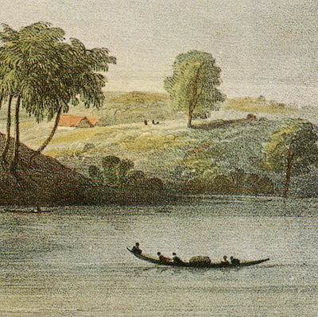

Heritage Objects Search
Communities
B
Community of Willemstad
Willemstad, a vibrant city known for its colorful architecture and rich cultural heritage.
28 members
7 lists
Community of Paramaribo
Paramaribo, a city celebrated for its diverse culture and historic wooden architecture.
35 members
9 lists
B
Community of Bali
Bali, a tropical paradise known for its stunning beaches and unique Hindu traditions.
42 members
5 lists
Community of Accra
Accra, a bustling city celebrated for its lively markets and vibrant street life.
19 members
8 lists
Community of Java
Java, an island of natural beauty with lush landscapes and rich Javanese culture.
30 members
6 lists
B
Community of Willemstad
Willemstad, a vibrant city known for its colorful architecture and rich cultural heritage.
28 members
7 lists
B
Community of Jogja
Jogja, the heart of Javanese culture, famous for its temples and traditional arts.
23 members
4 lists
Community of Kumasi
Kumasi, a city steeped in Ashanti history and known for its craftsmanship.
15 members
10 lists

Community of Surabaya
Surabaya, a bustling port city with a rich maritime heritage.
33 members
3 lists
B
Community of Cape Coast
Cape Coast, home to historic forts and a vibrant fishing community.
12 members
2 lists
Community of Curaçao
Curaçao, a diverse island with a love for music, art, and cuisine.
25 members
5 lists